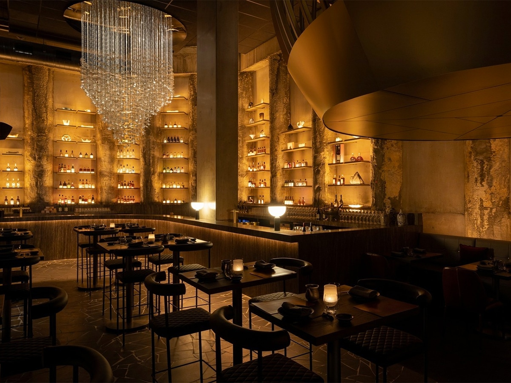
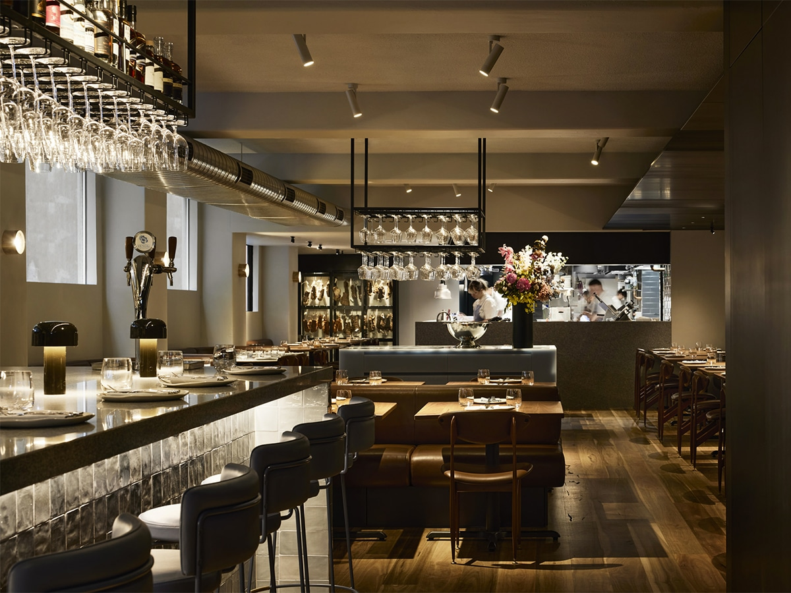

Purpose
To help users discover suitable fine dining venues, compare atmosphere and price, receive practical recommendations and move directly into a reservation form with the restaurant already selected.
Curated fine dining in Melbourne
Marz Reserve is a boutique restaurant discovery and reservation platform for couples, professionals, tourists, families and food-focused locals who want a polished booking experience without scrolling through endless options.

To help users discover suitable fine dining venues, compare atmosphere and price, receive practical recommendations and move directly into a reservation form with the restaurant already selected.
Convenience, variety, accessibility, transparent deposits, readable information and a calm visual design that matches the premium dining experience.
Restaurant browsing, rule-based recommendations, account registration, reservation requests, deposit method selection and an estimated bill calculator.
Featured booking
Each venue profile includes cuisine type, sample signature dishes, deposit amount, price range, image and a short description so users can decide quickly.

Shared menus, warm lighting and a Flinders Lane location make it an easy choice for business meals, pre-theatre dining and group dinners.
Reserve Nomad